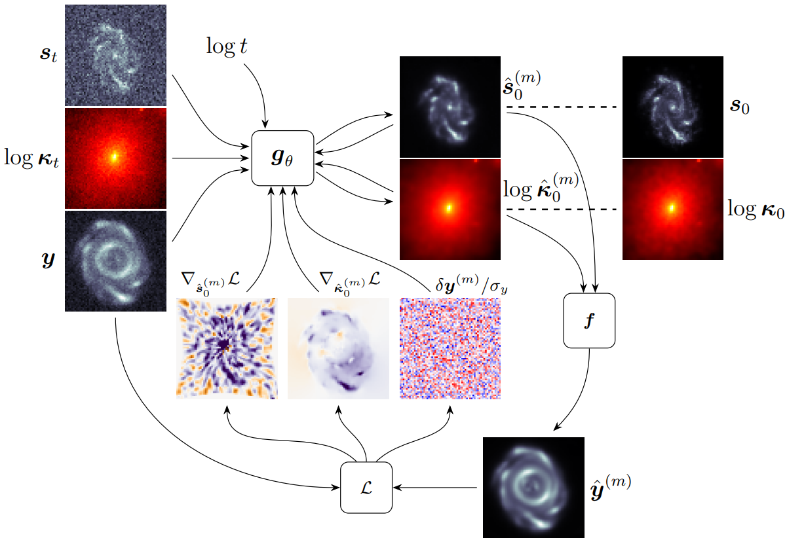

Strong gravitational lensing
Reconstructing the distant source and foreground mass from the distorted light we observe.
Astrophysics · Inference · Machine Learning
I’m Guillaume Payeur, a physics PhD student using machine learning and Bayesian inference to reconstruct the dark side of the Universe from the way it bends light.
My work connects physical models with modern learning systems to solve nonlinear, high-dimensional inference problems in astrophysics and cosmology.
Reconstructing the distant source and foreground mass from the distorted light we observe.
Moving beyond restrictive parametric models to infer rich, pixel-level posterior distributions.
Combining diffusion models, recurrent inference machines, and differentiable simulations.
Using observations and theory to investigate dark energy, dark matter, and the early Universe.
From pixel-space lens modeling to dark-energy phenomenology: a selection of work across astrophysics, cosmology, and machine learning.

Featured paper2026 · arXivDiffusion models and recurrent inference machines generate joint posterior samples of background-source brightness and foreground mass—both represented as pixelated images.
Read the paperProfile
I am a PhD student in physics at the Université de Montréal, supervised by Laurence Perreault-Levasseur. I am also a member of Mila, Ciela, and the Trottier Space Institute. Previously, I completed my MSc at McGill University with Robert Brandenberger and Evan McDonough.
Collaboration · Questions · Ideas